Comunicación Analógica
Página Web
CAPITULO 3: TRASMISIÓN POR MODULACIÓN DE AMPLITUD
Introducción
La modulación se realiza en el transmisor en un circuito llamado modulador, y en el receptor se demodula en un circuito llamado demodulador o detector. El objetivo de este texto es familiarizar al lector con los conceptos básicos de los transmisores de AM, describir algunos de los circuitos utilizados en los moduladores de AM y describir dos tipos diferentes de transmisores de AM.
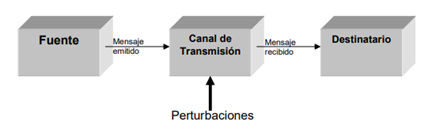
Características
La modulación en amplitud (AM) funciona mediante la variación de la amplitud de la señal transmitida en relación con la información que se envía. Contrastando esta con la modulación de frecuencia, en la que se varía la frecuencia, y la modulación de fase, en la que se varía la fase
Envolvente de AM
Son posibles de generar varias formas o variaciones de modulación de amplitud. Aunque matemáticamente no es la forma más sencilla, la portadora de AM de doble banda lateral (AM DSBFC) se discutirá primero, puesto que probablemente sea la forma más utilizada de la modulación de amplitud. AM DSBFC se le llama algunas veces como AM convencional.(Double Side Band Frequency Carrier)
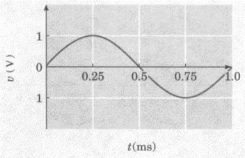
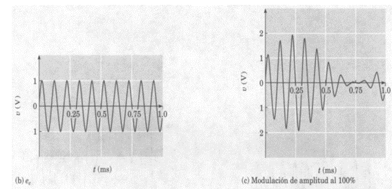
Espectro de Frecuencias y ancho de banda AM
Las dos frecuencias laterales se combinan y producen un componente resultante que a su vez se combina con el vector de la portadora. Esta adición fasorial. Los fasores para la portadora y las frecuencias laterales superiores e inferiores giran en una dirección contraria a las manecillas del reloj.
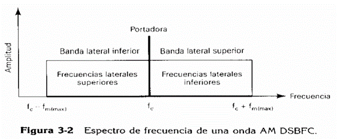
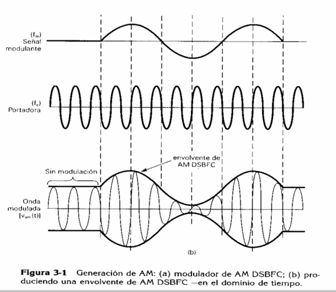
Presentación fasorial de una onda de amplitud modulada
Para una señal modulante de frecuencia única, se produce una envolvente de AM a partir del vector suma de la portadora y de las frecuencias laterales superiores e inferiores. Las dos frecuencias laterales se combinan y producen un componente resultante que a su vez se combina con el vector de la portadora.
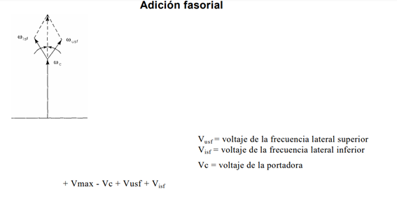.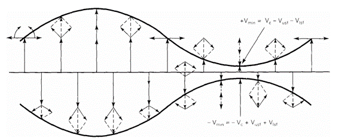
Coeficiente de modulación
Coefeciente de modulación es un término utilizado para describir la cantidad de cambio de amplitud (modulación) presente en una forma de una onda de AM. El porcentaje de modulación es simplemente el coeficiente de modulación establecido como un porcentaje. Más específico, el porcentaje de modulación proporciona el cambio de porcentaje en la amplitud de la onda de salida cuando está actuando sobre la portadora por una señal modulante. Matemáticamente, el coeficiente de modulación es
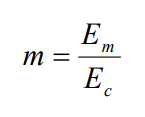
en donde m = coeficiente de modulación (sin unidad) Em= cambio pico en la amplitud del voltaje de la forma de onda de salida (volts) Ec= amplitud pico del voltaje de la portadora no modulada (volts) La ecuación 3-1 puede rearreglarse para resolver a Em y Ec como
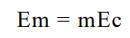
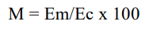
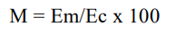
Distribución de voltaje en una señal de Am
Una portadora no modulada puede describirse matemáticamente como
Vc(t) = Ec sen(2pifct)
en donde
Vc(t) = forma de onda de voltaje de tiempo variante para la portadora
E = amplitud pico de la portadora (volts)
fc = frecuencia de la portadora (hertz)
Vc(t) = Ec sen(2pifct)
en donde
Vc(t) = forma de onda de voltaje de tiempo variante para la portadora
E = amplitud pico de la portadora (volts)
fc = frecuencia de la portadora (hertz)
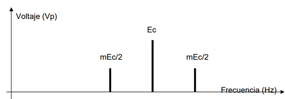
Distribución de potencia AM
La potencia es importante en cualquier esquema de comunicaciones debido a que la crucial relación señal a ruido en el receptor, depende mucho de que sea grande la potencia de la señal como de que sea pequeña la potencia del ruido. Sin embargo, la potencia que es más importante, no es la potencia de señal total sino sólo la porción que se utiliza para transmitir información. Puesto que la portadora en una señal de AM permanece sin cambio con la modulación, no contiene información. Su única función es ayudar a desmodular la señal en el receptor. Esto hace que en AM se desperdicie potencia, en comparación con otros esquemas de modulación que se describirán después.
Matemáticamente, para una onda sinusoidal la potencia de la portadora no modulada se expresa como
Matemáticamente, para una onda sinusoidal la potencia de la portadora no modulada se expresa como
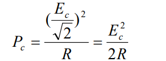
En donde Pc = potencia de la portadora (watts)
Ec = voltaje pico de la portadora (volts) R = resistencia de carga (ohms)
Las potencias de las bandas laterales superiores e inferiores se expresan matemáticamente como
Ec = voltaje pico de la portadora (volts) R = resistencia de carga (ohms)
Las potencias de las bandas laterales superiores e inferiores se expresan matemáticamente como
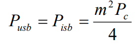
Modulación con una señal Compleja de información
Si una señal modulante contiene dos frecuencias (fm1 y fm2), la onda modulada contendrá la portadora y dos conjuntos de frecuencias laterales espaciadas simétricamente sobre la portadora. Dicha onda puede escribirse como
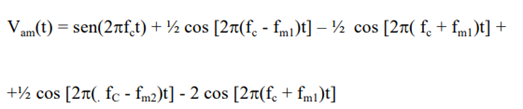
Tipos de modulación AM
• Modulación AM DBS-SC
La señal modulada DBS-SC en el transmisor. La complejidad del sistema resultante es el precio que debe pagarse por suprimir la onda portadora para ahorrar potencia en el transmisor.
La señal modulada DBS-SC en el transmisor. La complejidad del sistema resultante es el precio que debe pagarse por suprimir la onda portadora para ahorrar potencia en el transmisor.
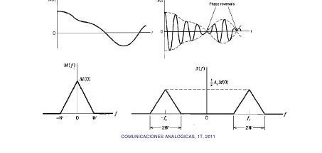
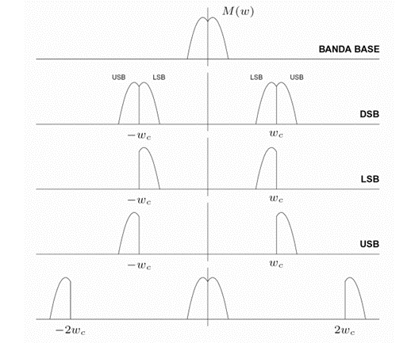
• Modulación AM SSB
• Modulación AM VSB
Una señal VSB es relativamente fácil de generar y únicamente tiene un ancho de banda algo superior (entre un 12 % o un 25 %) superior al de SSB.
Una señal VSB es relativamente fácil de generar y únicamente tiene un ancho de banda algo superior (entre un 12 % o un 25 %) superior al de SSB.
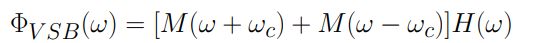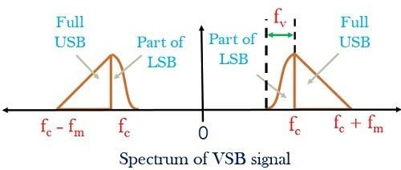
Descarga el documento
Materia capitulo III
Bibliografía
[1] Universidad Nacional Autónoma de México, Diseño e implementación de un transmisor AM, FM y ATSC en plataformas reconfigurables, UNAM, 2020. [En línea]. Disponible en: http://www.ptolomeo.unam.mx:8080/jspui/bitstream/132.248.52.100/10181/3/Tesis.pdf
[2] UTN Facultad Regional Córdoba, Transmisión de Modulación de Amplitud, Departamento de Electrónica Aplicada III. [En línea]. Disponible en: https://www.profesores.frc.utn.edu.ar/electronica/electronicaaplicadaiii/Aplicada/Cap03ModulacionAM1.pdf
[3] IPSTORE Telecomunicaciones, “Tipos de Modulación en Telecomunicaciones: AM y FM Explicadas en Detalle,” Blog IPSTORE, 2024. [En línea]. Disponible en: https://ipstore.cl/blogs/telecomunicaciones/modulacion-entelecomunicaciones-am-y-fm-explicadas-en-detalle
[2] UTN Facultad Regional Córdoba, Transmisión de Modulación de Amplitud, Departamento de Electrónica Aplicada III. [En línea]. Disponible en: https://www.profesores.frc.utn.edu.ar/electronica/electronicaaplicadaiii/Aplicada/Cap03ModulacionAM1.pdf
[3] IPSTORE Telecomunicaciones, “Tipos de Modulación en Telecomunicaciones: AM y FM Explicadas en Detalle,” Blog IPSTORE, 2024. [En línea]. Disponible en: https://ipstore.cl/blogs/telecomunicaciones/modulacion-entelecomunicaciones-am-y-fm-explicadas-en-detalle
INFOTMACIÒN

Integrantes:
•Karina Yucailla
• Sebastian Fiallos
• Christian Guachanboza
• Gutemberg Ramos
• Bryan Salazar
• Sebastian Fiallos
• Christian Guachanboza
• Gutemberg Ramos
• Bryan Salazar
Docente:
• Ing. juan Pablo Pallo